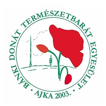
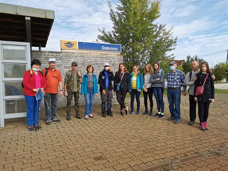

A Bánki Donát Természetbarát Egyesület (BDTE) 2003-ban alakult
Bányász Kegyeleti Emléktúra az Ajka-Felsőcsingeri temetőbe.


A megye legjobb természetjáró csapata
Újság cikkTARTS VELÜNK!
Like FollowBányász Kegyeleti Emléktúra az Ajka-Felsőcsingeri temetőbe.
A megye legjobb természetjáró csapata
Újság cikkA Bánki Donát Természetbarát Egyesület (BDTE) 2003-ban alakult azzal a céllal, hogy segítse a természetjárás iránt érdeklődőket testedzés, sportolás lehetőségének biztosításával, tapasztalt túravezetőkkel az ország szebbnél szebb természeti csodáihoz, kulturális értékeihez kalauzolni az arra fogékony turistákat. Fontos számunkra a civil szervezeti tevékenység és közösségi élet biztosítása is, továbbá a BDTE-vel kapcsolatban lévő oktatási-nevelési intézmények tanulói, hallgatói részére sportolás, testedzés lehetőségének megteremtése, Ajka városban és a környékén élő lakosság szabadidősportjának segítése.
TÚRÁINKNAK GARANTÁLT MELLÉKHATÁSA VAN!
EZ AZ ÉLETÖRÖM ÉS ÁLTALÁNOS JÓ KÖZÉRZET!
TúrákKéktúrázás napja
További érdekességek
facebook